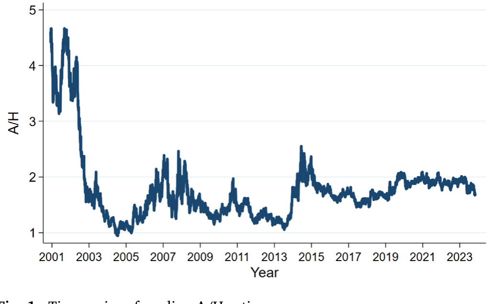
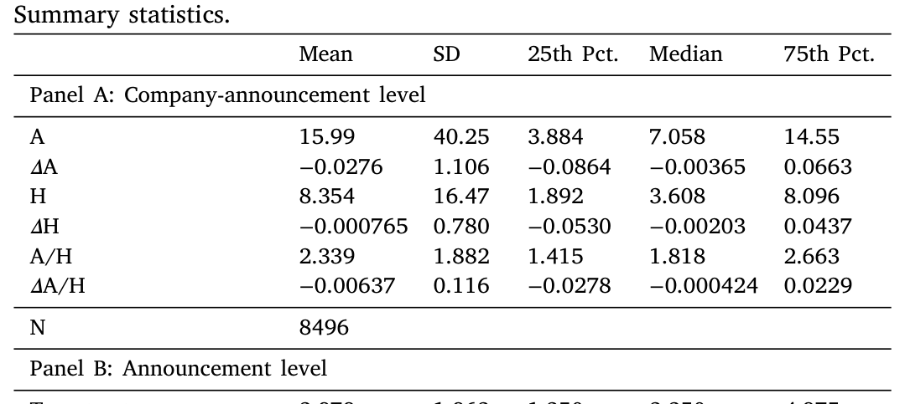
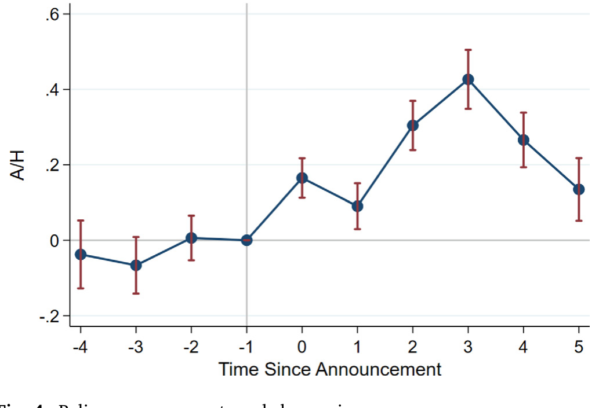
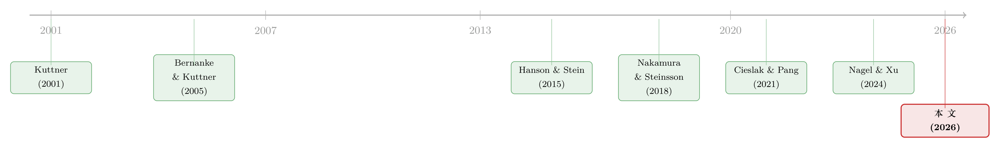

同一只股票，两个价格：用「A/H 比价」给货币政策的贴现率通道称重
本文读的是 Vandeweyer, Yang & Yannelis (2026, Journal of Financial Economics)：他们利用同一家中国公司在内地和香港两地同时上市、却因资本管制而价格背离这一独特制度，构造了一个「A/H 比价」，把货币政策对现金流的影响整个抵消掉，从而单独「称」出货币政策通过投资者贴现因子（discount factor）作用于股价的那一部分。结论是：这条通道不仅真实存在，而且强得惊人——100 个基点的「顺周期意外」会在五天内把比价推动 30 个基点；更微妙的是，效应是非对称的，只有放大当前周期的意外才显著。
1 一个老问题，和一个绕不开的混淆
货币政策怎样影响股价？这几乎是金融学里最古老、也最反复被问的问题之一。教科书会告诉你，答案可以拆成两块。
第一块是现金流通道（cash flow channel）：降息刺激总需求，企业未来赚得更多，于是股价该涨——这是 Caballero and Simsek (2022) 那一路的故事，也包括降息「释放了关于经济的新信息」这种解读 (Nakamura and Steinsson, 2018)。
第二块是贴现因子通道（discount factor channel）：即便企业的现金流分文未变，降息也可能让投资者愿意用更低的风险溢价去贴现这些现金流——也许是因为他们「为了凑够收益目标而被迫去冒险」(reaching for yield，Hanson and Stein, 2015)，也许是因为他们上调了对央行「会出手相救」的预期 (Cieslak and Pang, 2021)，甚至可能只是因为时间贴现率本身动了 (Nagel and Xu, 2024)。
这两块加起来，就是整个传导机制。问题在于：它们几乎总是搅在一起。一次降息既改变了人们对盈利的预期，又改变了人们贴现盈利的方式。你在美股上看到 FOMC 公告后股价跳了一下，那一跳里到底有多少是「现金流」、有多少是「贴现率」？没人分得清。Cochrane (2017) 早就指出，搞清楚贴现因子的行为，对于检验任何宏观金融模型的可信度都至关重要——可偏偏它最难被单独看见。
这就是全文要解决的那一个核心难题：如何把贴现率的变化，从现金流的变化里干干净净地剥离出来。后面所有的精巧设计，都是为了这一件事。
2 关键的一步：同一只股票，为什么会有两个价格？
要剥离现金流，最理想的实验是什么？是找到两份对同一笔现金流的索取权，让它们暴露在不同的贴现因子之下。如果现金流完全一样，那么两者价格之比里，现金流就被「约掉」了，剩下的纯粹是贴现因子之比。
听上去像天方夜谭，但中国的资本市场恰好提供了这样一个近乎完美的制度安排。
很多中国公司既在内地发行 A 股（以人民币计价，只对境内投资者开放），又在香港发行 H 股（在港交所交易，对全球投资者开放）。截至 2024 年底，有 374 家中国公司发行了 H 股，合计市值约 8900 亿美元，占港交所总市值的约 19.7%。对于同时发 A 股和 H 股的公司，这两种股票是对完全相同的底层现金流的索取权，且拥有相同的投票权和分红权。
按理说，同一笔现金流、同样的权利，价格该一样。但事实是——它们常年不一样，甚至 A 股能卖到 H 股价格的两倍。原因正是资本管制：内地投资者不能直接买港股，外资进入内地股市也有重重门槛 (Carpenter and Whitelaw, 2017)，套利通道几乎是堵死的。于是「A 股对 H 股的溢价」长期存在、且随时间剧烈波动 (Mei et al., 2009; Jia et al., 2017)。这个比价（A/H ratio）的中位数走势，见图 1。

Figure 1: Time series of median A/H ratio
接着，一个自然的问题是：既然两边市场被隔开，那它们各自的「贴现因子」也就被隔开了。香港这边，港元通过联系汇率制度（Linked Exchange Rate System, LERS）钉住美元（区间 7.75–7.85 港元兑 1 美元），香港金管局的政策利率事实上钉住美国目标利率，香港银行间隔夜拆借利率（HIBOR）紧贴联邦基金利率;而内地这边，人民银行（PBoC）独立行使货币政策，人民币与美国利率脱钩。
但真正关键的一步在于：信息是流通的，钱却是不流通的。由于地理和文化上的接近，关于公司未来现金流的消息会同时、同样地传到两地投资者耳朵里;可是货币政策造成的贴现率冲击，却只能作用于它「自己那一边」的投资者。于是反转出现了——美国货币政策的意外，会通过 HIBOR 强烈地冲击 H 股投资者的贴现因子，却几乎不碰 A 股投资者的贴现因子。 这就给了我们一个天然的「处理组 vs. 控制组」。
3 概念框架：为什么取个比值，现金流就消失了
让我把这件事写成方程，这是理解全文识别策略的地基。沿用 Cochrane (2005) 的写法，公司 \(i\) 在两地的股价是未来期望现金流的贴现：
$$ P^i_A = \frac{1}{R^i_A(m_A)}\, E\!\left[x^i(m_A, m_H)\right], \qquad P^i_H = \frac{1}{R^i_H(m_H)}\, E\!\left[x^i(m_A, m_H)\right], $$
这里 \(P^i_J\) 是股票 \(i\) 在地区 \(J \in \{A, H\}\) 的价格，\(R^i_J\) 是该地区投资者对其现金流施加的风险调整贴现因子，\(m_A\)、\(m_H\) 分别是两地的货币政策立场。注意那个 \(E[x^i(m_A, m_H)]\)——现金流的期望同时依赖两地的货币政策立场（因为贸易是整合的），但它对 A、H 两份索取权而言是完全相同的一个数。
下面这个最核心的方程，是全文的「阿基米德支点」。让我把它逐块标注出来：
既然 a2 这一项对 A 股和 H 股是同一个数，那么把两个价格相除，它就被彻底约掉了：
$$ \frac{P^i_A}{P^i_H} = \frac{R^i_H(m_H)}{R^i_A(m_A)}. $$
这就是整篇论文的灵魂。比价不再依赖现金流，而只取决于两地贴现因子之比。 进一步把贴现因子拆成无风险利率和风险溢价两部分：
$$ R^i_J = r_f(m_J) + r_{p,i}(m_J), \qquad J \in \{A, H\}, $$
于是逻辑就闭合了：如果一次美国货币政策意外让 H 股投资者降低了他们要求的风险溢价 \(r_{p,i}\)（或时间贴现率 \(r_f\)），\(R^i_H\) 下降，比价 \(P^i_A / P^i_H\) 就会上升。而这一切，与现金流无关。
4 识别策略：一个建在「比价」上的双重差分
有了这个比值，实证设计就水到渠成。作者用美国货币政策意外——经典的 Kuttner (2001) 与 Bernanke and Kuttner (2005) 从联邦基金期货中提取的意外成分——作为冲击源，看它如何推动 A/H 比价。核心回归是一个事件研究式的双重差分（difference-in-differences, DiD）：
$$ (P_A/P_H)_{ist} = \alpha_i + \eta_s + \lambda_t + \beta\,\mathit{Surprise}_s \times \mathit{Post}_t + \varepsilon_{ist}. $$
逐项来看：\((P_A/P_H)_{ist}\) 是公司 \(i\) 在公告 \(s\)、事件时间 \(t\) 的 A/H 比价;\(\mathit{Surprise}_s\) 是公告 \(s\) 的意外成分;\(\mathit{Post}_t\) 是公告之后取 1 的虚拟变量。三组固定效应各司其职——公司固定效应 \(\alpha_i\) 吸收掉「A 股长期就比 H 股贵」这类水平差异;公告固定效应 \(\eta_s\) 吸收掉每次公告特有的宏观环境;事件时间固定效应 \(\lambda_t\) 吸收掉总体的时间趋势。我们真正关心的就是 \(\beta\)：一个百分点的意外，把比价推动了多少。
这个设计有三层好处，值得一一点明：
首先，取同一家公司跨两地的比值，现金流预期的修正被中和了——只要它对 A、H 两边是同质的（共同信息集下应当如此）。
接着，相比那些直接盯着美股做事件研究的做法，这里巧妙地回避了一个经典内生性。在美国本土，美联储可能在对新的宏观信息做反应 (Bauer and Swanson, 2023)，甚至直接对股市本身做反应 (Rigobon and Sack, 2003; Cieslak and Vissing-Jorgensen, 2021)。但美国货币政策对香港的经济状况是外生的——美联储不会为了香港的经济而调息——可港元钉住美元又让 HIBOR 高度敏感于美国意外。外生的冲击，敏感的传导，这正是梦寐以求的设定。（关于美国货币政策如何外溢、以及他国能否对冲，可参见《对着美联储「逆向操作」：外汇干预能挡住美国货币政策的外溢吗？》。）
然后，盯住比值还顺手降了噪——把公司层面的现金流消息过滤掉，估计的精度反而更高，以至于作者能在 FOMC 公告日之外也识别出显著效应。
识别假设是什么？是「在没有货币政策公告时，A 股和 H 股的比价会平滑地走下去」——因为它们本就是对同一现金流的索取权。要威胁这个假设，一个混淆因素不仅得跟 A 股或 H 股之一的贴现率相关，还必须恰好发生在货币政策公告的那一刻，门槛相当高。
5 数据
样本是同时在内地和香港上市的 A/H 股公司，比价的日度序列从 2001 年 12 月延伸到 2024 年 10 月（图 1）。货币政策意外覆盖了 1994–2016 这段经典样本，并往后扩展到 2016–2019 和 2022–2024 两轮加息周期。观测单位是「公司–公告」层面，主样本约 8,496 个观测。描述性统计见表 1：A/H 比价的均值为 2.339、中位数 1.818——也就是说，A 股普遍比 H 股贵六到八成，溢价之大可见一斑。

Table 1
一个细节：2014 年 11 月推出的「沪港通（Stock Connect）」部分打通了两地市场。但作者指出，沪港通有 50 万元人民币门槛等诸多限制，事实上的分割依然存在，A/H 溢价并未因此显著收窄。为稳妥起见，他们还单独跑了 2014 年以前市场分割更彻底的子样本，结果一致。
6 主要结果：一个被低估的通道，和它的非对称性
第一个核心数字：联邦基金利率 25 个基点的意外下降，会在随后五天里，把中国公司香港上市股票相对内地股票的价格抬高 3%。 把这个数字摆在 Bernanke and Kuttner (2005) 报告的「货币政策意外对股价整体影响约 1%」旁边——注意，那 1% 是现金流和贴现率两条通道加总的效果，而这里 3% 是单单贴现率一条通道的效果。
这意味着什么？意味着传统高频策略很可能系统性地低估了货币政策对资产价格的作用。作者明确指出，高频识别之所以低估，很可能是因为公告时同时释放了关于现金流的信息，两者相互抵消、混淆了估计。这与 Cieslak and Pang (2021) 的发现遥相呼应——他们在 VAR 框架里算出，风险溢价的下降幅度是短端利率正交化意外的 3.5 倍。
但真正让我觉得漂亮的，是第二个结果：这条贴现率通道是非对称的。
作者把意外分成两类。顺周期意外（cycle-amplifying surprises）：宽松周期里的意外降息、或紧缩周期里的意外加息——它们「放大」了当前的政策方向。逆周期意外（contradictory surprises）：紧缩周期里的降息、或宽松周期里的加息。结果是——只有顺周期意外显著推动比价，逆周期意外的效应在统计上不可区分于零。综合起来，100 个基点的顺周期意外，五天内把比价推动约 30 个基点。
为什么会这样？作者的解释是：顺周期意外格外强烈地昭示了美联储「会对不利的市场和宏观状况出手」的倾向——也就是俗称的「美联储看跌期权（Fed Put）」。当投资者看到美联储在宽松周期里又一次意外降息，他们会把它读成「央行确实在尽力托底」，于是下调持有股票所要求的风险溢价，股价上行。这一机制与 Bauer et al. (2022) 用专业预测者面板数据得到的「公众对联邦基金利率与经济状况之关系的认知高度时变」相吻合，也与 Cieslak et al. (2019) 记录的「意外宽松后股权风险溢价显著下降」一脉相承。事件研究的图形（图 4）清楚地显示出公告前的平滑趋势和公告后的跳跃，这本身就是对识别假设的有力支持。

Figure 4: Policy announcements and share prices
第三组结果是横截面异质性，沿着 Fama and French (1992) 的三个特征展开。高 beta 股票对意外的反应显著更大——这正是「贴现率冲击对越有风险的股票影响越大」这一标准资产定价逻辑的体现。小市值公司和低市盈率的价值公司对 FOMC 公告后的贴现因子调整更敏感——这与「这类困境公司要求更高的宏观公告风险溢价」的解释一致 (Chan and Chen, 1991)，也呼应了「贴现因子波动主要冲击近端现金流、而非远端现金流」的久期视角 (Binsbergen and Koijen, 2017)。（关于用久期重新审视股票与债券的可比性，可参见《久期错配：当我们把股票和「同样年限」的债券放在一起比》。）最后，把意外与滞后的 A/H 比价交互，发现比价最高的那些股票受冲击最大。
为打消「会不会是两地现金流预期反应不同」的疑虑，作者还做了两组针对性检验：一是把样本切成「对美出口」和「不对美出口」的公司，结果两组没有差异（若是现金流故事，对美出口的公司理应反应不同）;二是用专业预测者的现金流增长预期数据，确认两地分析师对货币政策意外的现金流修正没有系统性差别。此外，人民币兑港元、兑美元的汇率在意外后也没有显著反应，排除了汇率通道这一替代解释。
7 文献脉络
这条研究线，本质上是「货币政策意外文献」与「贴现率/风险溢价文献」的一次合流。
源头是 Kuttner (2001)——他第一次用联邦基金期货干净地提取出货币政策的「意外」成分;紧接着 Bernanke and Kuttner (2005) 把这个意外接到股市上，给出了那个著名的「约 1%」基准。之后的二十年，焦点逐渐从「股价动了多少」转向「为什么动、动的是哪一块」。Hanson and Stein (2015) 提出「为收益率冒险」并研究了债券贴现因子的反应;Nakamura and Steinsson (2018) 用高频识别揭示了 FOMC 公告里夹带的「信息效应」;Cieslak and Pang (2021) 把股债的共同冲击拆开，量化了风险溢价那一块;到 Nagel and Xu (2024)，则把 Bernanke–Kuttner 的故事重新归因到「收益率的变动，而非股权溢价」。

本文站在这条线的最新一环上：它不再满足于在美股上做归因（那里美联储的反应函数本身就是内生的），而是借中国 A/H 双重上市这个外生的、被分割的实验室，第一次把贴现因子通道单独、干净地称了出来。这也接上了另一条文献——中国市场分割与 A/H 溢价的研究 (Mei et al., 2009; Jia et al., 2017; Carpenter et al., 2021)，只不过这次，溢价不是被研究的对象，而是被借用的「测量仪」。
8 评论与延伸（Q&A + 研究方向）
(a) 几个可能的疑问
Q：A 股相对 H 股本来就贵六到八成，这个「水平差异」会不会污染结果？
不会，因为识别用的是变化而非水平。常年存在的溢价被公司固定效应 \(\alpha_i\) 吸收掉了，\(\beta\) 捕捉的是货币政策意外前后、比价相对自身的位移。这正是 DiD 设计的用意所在。
Q：既然信息是流通的，为什么贴现率冲击不会也「流」到另一边去？
关键区别在于：信息流通靠的是「人能不能看到消息」，而贴现率冲击靠的是「钱能不能流动」。资本管制堵死了资金跨境套利，所以 HIBOR 对 H 股投资者的实际融资成本/风险定价的冲击，没法传导到被隔离的 A 股投资者那里。信息对称、资本分割——这正是设计能成立的前提。
Q：为什么只有「顺周期意外」显著，「逆周期意外」却没反应？这不奇怪吗？
作者的解释是信号含量不同。顺周期意外（如宽松中再降息）强烈印证了「美联储愿意托底」，触发风险溢价的明显下修;逆周期意外则信号混杂、难以解读，投资者无所适从，于是平均效应被冲淡到不显著。这与「美联储看跌期权」和认知时变 (Bauer et al., 2022) 的叙事自洽。
Q：3% 这个数比 Bernanke–Kuttner 的 1% 还大，是不是反而说明设计有问题？
恰恰相反，这是本文的卖点之一。1% 是现金流与贴现率两条通道加总（且可能相互抵消）后的净效应;3% 是单条贴现率通道的效应。两条通道在公告时常常方向相反，加总后被低估——这也是作者说「高频策略可能低估货币政策效应」的依据。
Q：沪港通 2014 年开通后，两地不是部分打通了吗？分割假设还成立吗？
作者用数据回应：沪港通有资金门槛等限制，A/H 溢价开通后并未显著收窄，说明事实上的分割仍在。而且他们单独跑了 2014 年前更彻底分割的子样本，结论一致——稳健性是过关的。
Q：会不会其实是汇率在动，而不是贴现率？
作者明确检验过：货币政策意外后，人民币兑港元、兑美元都没有显著反应（港元钉美元、人民币也相对稳定）。这把汇率通道排除掉了，剩下的更像是纯粹的贴现因子调整。
(b) 几个可能的研究问题与提案
1. 把这把「比价标尺」搬到公司债市场
【经济故事】同一家中资发行人，常常既有在岸人民币债、又有离岸美元债（点心债/中资美元债）。如果能找到对同一信用主体、同期限的两地债券，理论上可以构造一个「债券版 A/H 比价」，把信用利差里的贴现率成分与违约预期成分分开——这正是股票做不到的、信用市场独有的维度。 【可行性】中。数据可从 Bloomberg/Markit 取得在岸与离岸中资债报价;难点在于久期、流动性、税收和投资者基础的匹配，需要精细的配对与控制。识别上可沿用本文的「美国意外 × 两地分割」思路。
2. 外资持有人结构如何调节贴现率通道的强度
【经济故事】H 股投资者基础里，全球机构与本地散户的占比差异很大。如果贴现率冲击的本质是「风险溢价的重定价」，那么由谁来定价就至关重要——外资占比高的股票，是否对美国意外更敏感？这能把「贴现因子通道」进一步拆到「持有人异质性」。 【可行性】中。需要 H 股的持有人结构数据（港交所披露、CCASS 持仓等），与本文的事件研究框架对接。挑战在持有人数据的频率和精度。
3. 把识别推广到其他「双重上市 + 货币分割」的天然实验
【经济故事】A/H 不是唯一的分割案例。历史上还有封闭式基金折溢价、不同投票权份额、以及其他设有资本管制的新兴市场的本地/外资份额。能否构造一组跨国的「双重索取权」样本，检验贴现率通道在不同制度下的强弱？ 【可行性】中偏低。可比的「同一现金流、两地分割」案例稀少，且多数分割程度不如 A/H 彻底，外部效度需谨慎论证。
4. 流动性能否解释「非对称性」中的残余部分
【经济故事】顺周期 vs. 逆周期意外的非对称，作者归因于信号含量。但另一种可能是：不同周期下两地市场的流动性状况不同，导致比价对冲击的吸收能力不同。把流动性指标（买卖价差、Amihud）作为调节变量，可以检验「贴现率重定价」之外是否还有「流动性折扣」在作祟。 【可行性】高。两地的日度流动性指标可得，直接在本文回归里加交互项即可，是一个低成本、高价值的扩展。
9 我的判断
贡献。 这篇文章最了不起的地方，不在于某个具体系数，而在于那个测量仪式的洞见：用资本管制把同一笔现金流劈成两半、再相除，让现金流自己消失。这是把一个「制度缺陷」（市场分割）转化为「识别优势」的典范，干净、可信、且几乎无可辩驳。它第一次把贴现因子通道单独称重，并给出了「单通道 3% > 双通道 1%」这个发人深省的对比，对宏观金融模型的校准和政策规则的设定都有实打实的含义。非对称性的发现（只有顺周期意外显著）更是把「美联储看跌期权」从一个比喻变成了可测量的对象。
对识别的担忧。 我有两点保留。其一，整套逻辑的命门是「现金流预期对 A、H 两边同质」。作者用出口分组和分析师预期做了检验，令人信服，但 A 股的投资者结构（散户主导、情绪驱动、Mei et al. (2009) 所记录的投机性交易）与 H 股截然不同，公告时两边的风险溢价本就可能以不同节奏调整——而这恰恰是被当作「信号」而非「噪音」的东西，二者的边界值得再推敲。其二，比价同时受两地贴现因子驱动，文章把识别建立在「美国意外只冲击 H 端」上;但 FOMC 公告日全球宏观信息密集，PBoC 是否在同一窗口有所反应（哪怕是预期层面），需要更细的排除。
后续想看到什么。 我最想看到的是把这把标尺接到信用市场上去（见提案 1）——股票只能告诉我们贴现率动了多少，而中资美元债与在岸债的配对，有机会把违约预期与贴现率分得更开，这正是公司债研究里长期纠缠不清的一对。其次，我希望看到对持有人结构的刻画（提案 2）：如果贴现率通道的本质是「谁在重定价风险」，那么把外资占比放进来，也许能解释为什么有些股票的 \(\beta\) 格外大。
参考文献
- Bauer, Michael D., Pflueger, Carolin E., Sunderam, Adi (2022). Perceptions about Monetary Policy. Working Paper.
- Bauer, Michael D., Swanson, Eric T. (2023). An Alternative Explanation for the 'Fed Information Effect'. American Economic Review 113(3), 664–700.
- Bernanke, Ben S., Kuttner, Kenneth N. (2005). What Explains the Stock Market's Reaction to Federal Reserve Policy? Journal of Finance 60(3), 1221–1257.
- Binsbergen, Jules van, Koijen, Ralph S.J. (2017). The Term Structure of Returns: Facts and Theory. Journal of Financial Economics 124, 1–21.
- Caballero, Ricardo J., Simsek, Alp (2022). A Monetary Policy Asset Pricing Model. NBER Working Paper 30132.
- Carpenter, Jennifer N., Lu, Fangzhou, Whitelaw, Robert F. (2021). The Real Value of China's Stock Market. Journal of Financial Economics 139(3), 679–696.
- Carpenter, Jennifer N., Whitelaw, Robert F. (2017). The Development of China's Stock Market and Stakes for the Global Economy. Annual Review of Financial Economics 9, 233–257.
- Chan, K.C., Chen, Nai-Fu (1991). Structural and Return Characteristics of Small and Large Firms. Journal of Finance 46, 1467–1484.
- Cieslak, Anna, Morse, Adair, Vissing-Jorgensen, Annette (2019). Stock Returns over the FOMC Cycle. Journal of Finance 74, 2201–2248.
- Cieslak, Anna, Pang, Hao (2021). Common Shocks in Stocks and Bonds. Journal of Financial Economics 142(2), 880–904.
- Cieslak, Anna, Vissing-Jorgensen, Annette (2021). The Economics of the Fed Put. Review of Financial Studies 34(9), 4045–4089.
- Cochrane, John (2005). Asset Pricing: Revised Edition. Princeton University Press, Princeton, NJ.
- Cochrane, John (2017). Macro-Finance. Review of Finance 21(3), 945–985.
- Fama, Eugene, French, Kenneth (1992). The Cross-Section of Expected Stock Returns. Journal of Finance 47, 427–465.
- Fama, Eugene, French, Kenneth (1993). Common Risk Factors in the Returns on Stocks and Bonds. Journal of Financial Economics 33(1), 3–56.
- Hanson, Samuel G., Stein, Jeremy C. (2015). Monetary Policy and Long-Term Real Rates. Journal of Financial Economics 115(3), 429–448.
- Jia, Chunxin, Wang, Yaping, Xiong, Wei (2017). Market Segmentation and Differential Reactions of Local and Foreign Investors to Analyst Recommendations. Review of Financial Studies 30(9), 2972–3008.
- Kuttner, Kenneth N. (2001). Monetary Policy Surprises and Interest Rates: Evidence from the Fed Funds Futures Market. Journal of Monetary Economics 47(3), 523–544.
- Mei, Jianping, Scheinkman, Jose, Xiong, Wei (2009). Speculative Trading and Stock Prices: Evidence from Chinese A-B Share Premia. Annals of Economics and Finance 10(2), 225–255.
- Nagel, Stefan, Xu, Zhengyang (2024). Movements in Yields, Not the Equity Premium: Bernanke–Kuttner Redux. NBER Working Paper 32884.
- Nakamura, Emi, Steinsson, Jón (2018). High-Frequency Identification of Monetary Non-Neutrality: The Information Effect. Quarterly Journal of Economics 133(3), 1283–1333.
- Rigobon, Roberto, Sack, Brian (2003). Measuring the Reaction of Monetary Policy to the Stock Market. Quarterly Journal of Economics 118, 639–670.